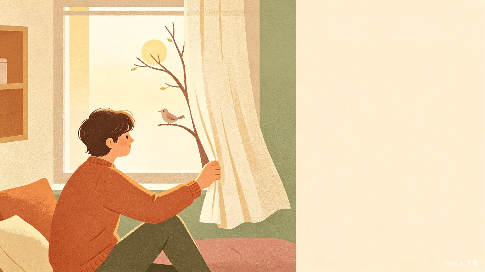
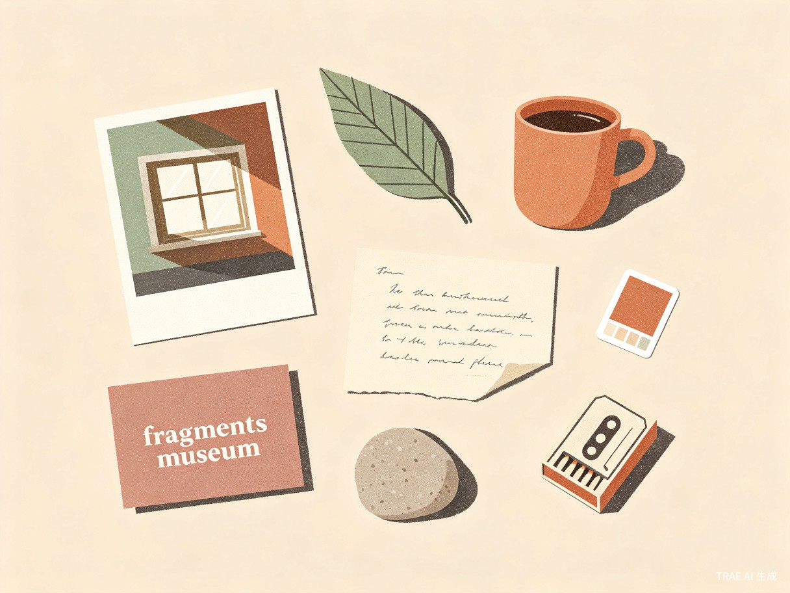
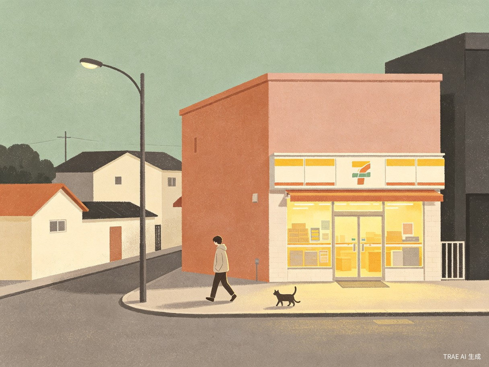

今天碰一下
世界。
— a tiny adventure for low-energy days.
不要求你立刻热爱生活，
只陪你今天碰一下世界。

把改变缩小到一个真正做得到的动作。
生活中有一些人长期独处、性格内向、社交压力较大，或者正处于情绪低落、生活单调、缺少动力的阶段。他们并不是不想改变——而是不知道今天可以做什么，也很难完成"跑步、社交、学习、打卡"这些看起来积极、实际却压力很大的计划。
"今天碰一下世界"不要求用户立刻热爱生活，也不强迫用户变得外向，而是陪他在今天与真实世界产生一点轻微而积极的连接。利用 AI 理解用户当天的真实状态，生成一份不说教、不催促、可以随时降低难度的"一日微冒险清单"，让用户从最小的一步开始，慢慢找回对生活的感受。
低能量时刻
明明觉得无聊，却不知道可以去哪里、做什么。普通待办清单只会带来新的压力。
不说教，不催促
AI 不要求跑步 30 分钟、不强求社交，只生成今天此刻"刚好做得到"的小动作。
留下一点痕迹
一张照片、一句话、一种颜色——让原本空白的一天，留下一点真实的痕迹。
为那些"不想强行积极"的人。
本产品不把内向视为需要被纠正的问题，也不进行心理疾病诊断。我们尊重不同用户的生活节奏，提供温和、低压力的日常行动支持。
独居青年 · 25–32 岁
下班后习惯刷手机，明明无聊却又没动力，对"积极生活"指南有抵触。
社交敏感者
不想被"出去交朋友"压住，但愿意在便利店对店员说一句"谢谢"。
居家办公族 · 自由职业者
一周可能几天不下楼，需要一个温和的理由去和真实世界打个照面。
情绪低能量阶段
不需要被催着改变，需要的是一个"真的做得到"的最小一步。
选择你今天的状态，AI 会刚好生成做得到的清单。
下方是一个可点击的真实交互演示。尝试切换不同状态——AI 会根据你的精力、外出与社交意愿，重新生成 3 个今天刚好做得到的小任务。
你现在大概是什么状态？
提示：点任意任务上的 "我现在做不到 ↓" 按钮，看看 AI 如何把任务降级到此刻能完成的最小动作。
"我现在做不到"——这是这个产品最重要的按钮。
一般的待办清单会因为没完成而惩罚你。我们让用户告诉 AI："这个还是太难了。"AI 不会催你坚持，而是把任务一层层降级到刚好能完成的颗粒度。
传统打卡 App
- 强调连续打卡，断签 = 失败
- "运动 30 分钟"是默认起点
- 未完成 = 弹窗提醒 + 数据羞辱
- 对低能量用户构成额外压力
今天碰一下世界
- 没有连续打卡，中断不会被惩罚
- 起点可以是"打开窗户看一眼"
- 未完成 = 提供更小的一步
- 把"做得到"作为唯一的指标
每一个功能，都在说同一件事——慢一点，没关系。
今日状态选择
5 个轻量问题：精力、时间、预算、外出意愿、社交接受度。一分钟内回答，不需要写日记。
AI 一日微冒险清单
3 个左右个性化任务，分为身体开机、感官唤醒、微小成就、低压力连接和现实微冒险五种类型。
"我现在做不到" 降级
核心交互。AI 会沿着行动颗粒度逐级缩小，找到此刻真正可执行的版本。
生活盲盒
不想填状态时，"替我决定今天做什么"——随机抽一个温和的小任务。
生活碎片博物馆
用户完成任务后保存的照片、文字、颜色或声音，会逐渐组成一张属于自己的"生活地图"。没有排行榜，没有连续打卡，不会因为中断使用而惩罚用户——它只是温柔地证明：你并没有原地不动。

AI 是怎么"刚好"生成做得到的任务的？
从用户状态到任务输出，整个流程包含一个安全过滤层和一个降级回路：
flowchart LR
A[用户输入
精力·时间·外出·社交·预算] --> B{安全过滤层
检测高风险信号}
B -- 低风险 --> C[状态向量
映射到任务标签]
B -- 高风险 --> S[切换至关怀模式
提供求助资源]
C --> D[任务库 + 个人偏好]
D --> E[生成 3 个微任务
身体·感官·成就·连接·冒险]
E --> F[用户体验任务]
F -- 我现在做不到 --> G[降级引擎
颗粒度缩小]
G --> E
F -- 完成 --> H[生活碎片博物馆]
每一份微冒险背后的设计学。
我们将任务分成 5 大类型，确保每天的清单同时覆盖"身体、感官、行动、连接"四个维度——而不是把所有压力压在"社交"或"运动"上。
两个具体的"今天"。

Scene A · 房间里的一格电
精力 1 格 · 不想出门 · 不想社交 · 20 分钟 · 0 元
Scene B · 走一条没走过的路
状态一般 · 可以下楼 · 轻度社交 · 60 分钟 · 20 元
关注一群容易被忽略的人。
他们未必愿意主动倾诉，也未必需要高强度社交，但同样需要与现实生活保持连接。本产品不会用"你应该出去走走"这样的说教式语言，而是根据用户的状态给出温和、具体、可执行的行动建议。
安全机制 · Safety Layer
当用户长期选择极低能量状态，或表达明显的绝望、自我伤害等高风险内容时，系统不会继续以普通任务回应，而是优先提示用户联系信任的人、专业支持或当地紧急援助。本产品是日常行动辅助工具，不替代专业心理咨询、诊断和治疗。
商业模式 · 基础免费 + 个性化主题订阅
今天的窗户
- 每日状态选择 + AI 微任务生成
- "我现在做不到" 任务降级
- 基础生活记录（图/文/色）
- 生活盲盒随机推荐
城市里的一日
- 城市微冒险 & 周末主题挑战
- 个人偏好持续学习 / AI 生活周报
- 好友陪伴模式（可选）
- 更丰富的生活碎片展示模板
- 合作场景：书店 · 咖啡 · 公园 · 展览
不要求你立刻热爱生活，
只陪你今天碰一下世界。
TODAY · TOUCH · THE · WORLD / 一个温柔到极小的开始